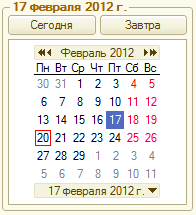
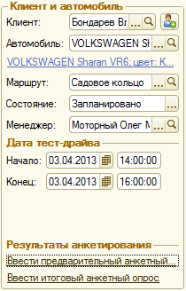
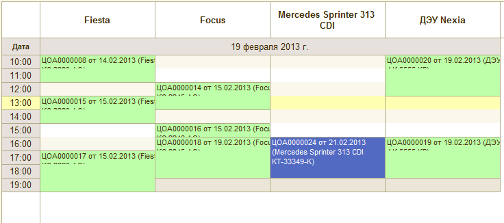
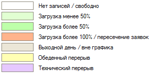
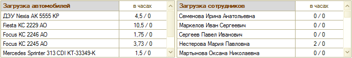

Обработка представляет собой рабочее место менеджера автосалона и предназначена для планирования времени проведения тест-драйвов в разрезе автомобилей, моделей автомобилей или сотрудников автосалона.
Является основной формой АРМ. Форма состоит из следующих элементов:
Панель "Заголовок"
Строка поиска. Поиск осуществляется по документам "Тест-драйв". Критериями для поиска служат номер документа, наименование клиента, наименование автомобиля, государственный номер автомобиля, маршрут, менеджер, комментарий к документу. Если в результате поиска найдено более одного документа, то будет открыта форма со списком найденных документов. Полученный в результате поиска документ открывается для редактирования в АРМ.
Кнопка "Настройка полей поиска". Служит для указания перечня полей, по которым производится поиск документов. В форме настройки полей поиска обязательно должно быть выбрано хотя бы одно поле.
Меню действий документа. В заголовке меню отображается номер текущего документа. Меню содержит следующие действия:
Открыть форму. Открытие формы текущего документа.
Найти в списке. Открытие формы списка документов и позиционирование на текущем документе.
Печать. Печать выбранной печатной формы.
Выбор печатной формы. Подменю с перечнем доступных печатных форм документа.
Ввести на основании. Создание документа на основании текущего документа и открытие его формы.
Кнопка "На месяц". Переключение календаря в режим "На месяц".
Кнопка "По автомобилям". Переключение календаря в режим "На день" с разбивкой планирования по автомобилям. Список доступных для планирования автомобилей формируется по остаткам регистра «Автомобили для тест-драйва» на дату календаря с учетом выбранного режима использования графиков работы.
Кнопка "По моделям". Переключение календаря в режим "На день" с разбивкой планирования по моделям автомобилей. В колонке отображается одновременно загрузка всех автомобилей данной модели, доступных в этот день для проведения тест-драйва. Такой режим отображения удобен, когда имеется много автомобилей одной модели и нужно максимально быстро найти ячейки, когда доступна хотя бы одна из машин конкретной модели.
Кнопка "По сотрудникам". Переключение календаря в режим "На день" с разбивкой планирования по менеджерам, ответственным за проведения тест-драйвов.
Кнопка "Настройка параметров календаря". Открытие формы "Настройка параметров календаря".
Область "Дата календаря"
Используется для выбора даты для отображения на календаре: месяца в режиме "На месяц" или дня в режиме "На день". Дата, которая в данный момент выбрана на календаре, отображается в заголовке области. В режиме "На день" доступны кнопки быстрого перехода к текущему календарному дню - "Сегодня" и завтрашнему дню - "Завтра".
Область "Клиент и автомобиль"
Содержит основные реквизиты документа, гиперссылки для ввода анкетных опросов на основании документа, кнопку быстрого ввода контрагента. Подробное описание реквизитов документа находится в справочной информации к документу.
Область "Календарь"

Календарь может быть представлен в режимах: "На месяц" и "На день" с разбивкой планирования по автомобилям, моделям или сотрудникам.
В режиме "На месяц" в ячейках календаря размещаются показатели загрузки в следующем формате: 1) по автомобилям: фактическая в часах/оптимальная в часах; 2) по сотрудникам: фактическая в часах/оптимальная в часах. Загрузка рассчитывается суммарно по всем автомобилям и сотрудникам компании, по которым производится планирование. Выбор какого-либо дня в календаре позволяет перейти к планированию в режиме "На день".
В режиме "На день" в колонках календаря размещаются запланированные тест-драйвы согласно настройке представления документа.
Нажатие на кнопку выбора или щелчок правой кнопкой мыши в ячейке календаря в режиме "На день" вызывает контекстное меню, откуда доступны операции: добаление нового тест-драйва, удаление работы, открытие формы текущей заявки. В режиме календаря "по моделям" в контекстном меню для добавления выводятся только незапланированные автомобили.
Расшифровка цветов на календаре: 
Область "Показатели загрузки"
Доступна в режиме календаря "На месяц". Содержит показатели загруженности с детализацией по конкретным автомобилям и сотрудникам. В ячейке таблицы через знак "/" указывается фактический и оптимальный показатель загрузки на выбранную дату соответственно. Показатели фактической загрузки складываются из запланированных на дату. Раскраска строк таблицы выполняется согласно приведенной выше расшифровке цветов. Оптимальные показатели
Панель основных действий
Содержит кнопки основных действия и контекстных переходов между АРМ.
В списке клиентов курсор будет спозиционирован на клиенте текущего документа.
«Автосалон» В списке рабочих листов курсор будет спозиционирован на рабочем листе - основании текущего документа, если найден.
«Календарь» Открывается календарь с позиционированием на дате, которая в данный момент выбрана в АРМ.
Основные действия:
Печать. Печать выбранной печатной формы.
Новый документ. Создание нового документа.
Загрузить. Выбор документа для загрузки в АРМ.
Записать и создать новый. Запись и проведение документа (режим проведения - неоперативный). Если запись прошла успешно, создается новый документ и загружается в качестве текущего в АРМ.
Записать. Запись и проведение документа (режим проведения - неоперативный).
Используется для настройки различных параметров отображения календаря. Cостоит из следующих настроек:
Интервал автоматического обновления. Интервал автоматического обновления календаря в секундах (от 10 до 999 секунд).
Критерий оценки загруженности. Один из показателей, по значению которого будет раскрашиваться ячейка в режиме "На месяц".
Режим календаря по умолчанию. Способ отображения календаря, который будет использоваться по умолчанию при переключении в режиме "На день".
Базовый график. График работы, по данным которого будет формироваться календарь в режиме "На день".
Отбор по подразделению. Подразделение компании, сотрудники и автомобили которого будут отображены в колонках календаря в режиме "На день". Если не заполнено - то отображаются все сотрудники и автомобили компании без отбора.
Использование графиков работы. Назначает, какой график будет использоваться при формировании календаря: график рабочих мест (каждого автомобиля/сотрудника в отдельности), базовый график компании (настройка "базовый график"), график подразделения (найстройка "отбор по подразделению") или без учета графиков. В соответствии с выбранным графиком показываются рабочие/не рабочие интервалы времени, перерывы, выходные дни и т.д.
Отображать только работающих. Управляет видимостью рабочих мест в календаре в режиме "На день" при отображении с использованием графиков рабочих мест. Когда флажок выбран, отображаются только те рабочие места, для которых вид дня по графику задан как рабочий (рабочий, предпраздничный). Рабочие места с нерабочим видом дня по графику (выходной, праздник) отображаются, если имеются запланированные тест-драйвы. Когда флажок не выбран, отображаются все рабочие места согласно графикам рабочих мест.
Интервал календаря. Временной интервал для одной ячейки в режиме "На день".
Продолжительность. Количество дней, отображаемых в режиме "На день".
Представление документа. Определяет, как будет отображаться документ на календаре в режиме "На день". Настройка представляет из себя форматную строку, которая состоит из служебных и вспомогательных символов. Служебные символы автоматически заменяются соответствующими значениями, в качестве вспомогательных символов могут использоваться любые клавиатурные символы, разрешенные к вводу в строчные поля платформой "1С-Предприятие". Перечень зарезервированных служебных символов приведен ниже:
Служебный символ
Подставляемое значение
Н
Номер документа "Тест-драйв"
Д
Дата документа "Тест-драйв"
А
Автомобиль. Выводится наименование модели автомобиля и государственный номер.
К
Клиент (первые 12 символов наименования)
С
Сотрудник (первые 12 символов наименования)
М
Маршрут (первые 12 символов)
По умолчанию форматная строка "Д от Н". Представление заявки в таком случае будет выглядеть как в следующем примере: "ЦОА0000001 от 01.01.2012". Вместо "Д" подставляется дата документа, вместо "Н" - номер документа.
Ширина колонки. Ширина основной колонки (рабочие места). Значение в диапазоне от 10 до 50.
Режим добавления в одиночную ячейку. Назначает, какой интервал времени займет тест-драйв при добавлении в одиночную ячейку: интервал согласно 1й выделенной ячейке или интервал времени согласно нормативу тест-драйва.
Норматив тест-драйва. Длительность тест-драйва по умолчанию в часах. Используется для автоматического расчета даты окончания тест-драйва.
Маршрут по умолчанию. Используется для автоматической подстановки маршрута в новый документ.
Способ вызова
Открывается из основной формы обработки по кнопке "Настройка параметров календаря". Отдельно не используется.
"Настройка полей поиска". Служит для указания перечня полей, по которым производится поиск документов. В форме настройки полей поиска обязательно должно быть выбрано хотя бы одно поле.
 "Настройка параметров календаря". Открытие формы "Настройка параметров календаря".
"Настройка параметров календаря". Открытие формы "Настройка параметров календаря".